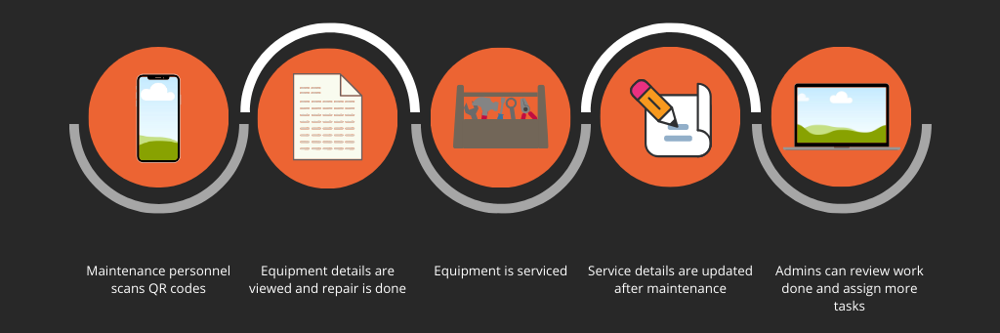
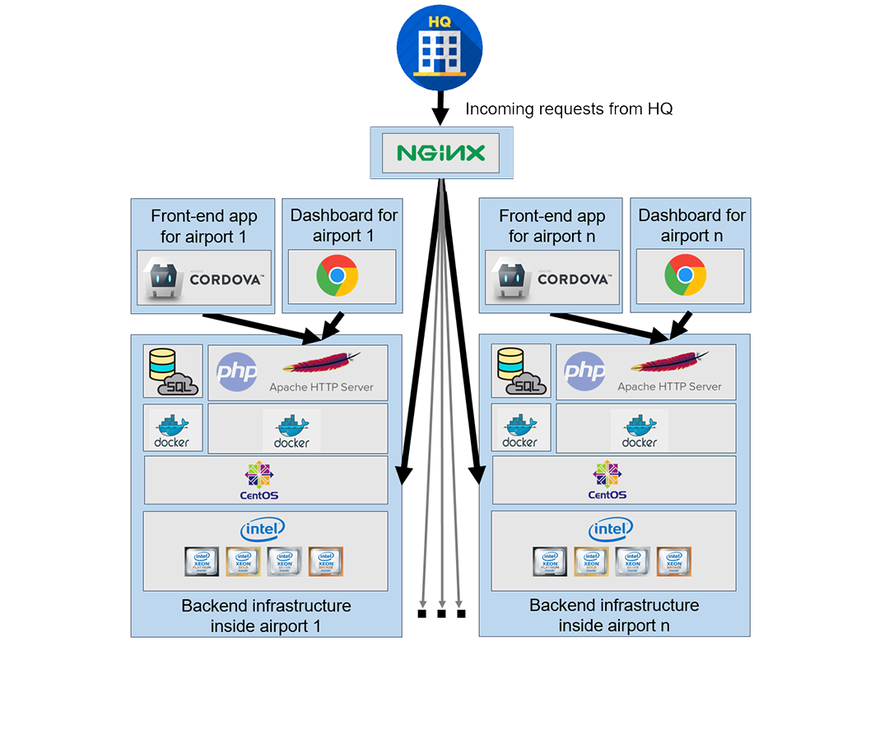

A Mobile Based Inventory Management System Using QR Code Application
Daniel Mark, Pon Rahul, Alex Ezhil Arasu, Sharath Devasahayam, Swana Simran, Pooja Krishan
Brains of Castamere
I. The Problem
A mobile application is required that is capable of
a.) Having all the details of the equipment like S/N, Date of Installation etc. by scanning a QR code/ barcode.
b.) Readily accessing the past service record by scanning a QR code/ barcode.
c.) Entering the details and updating service history on the spot, just after maintenance.
II. PROPOSED IDEA
A. Key Points
- A cross-platform web app that runs on Android, iOS, Windows and Chrome OS phones as well as any browser.
- Scan & generate QR/barcodes with equipment ID & use them to view past service record and details about the equipment.
- App will also contain a list of jobs that each maintenance personnel has to do within a timeframe and live reporting with feedback to admin/manager is also built into it.
- A browser-based dashboard that local admins can use to monitor, update, delete, add data and also visualize projected costs for specific maintenance cases and generate automated reports.
B. Our Process

III. TECHNOLOGY STACK
A. Smartphone Apps
-

HTML5
HTML5 will be used as our markup language to render the front-end of the app with Bootstrap 4.3.3 as the framework that'll handle responsiveness across different screen sizes. -

CSS3
CSS3 will be used to style elements across our front-ends. Most style classes will come off of the Bootstrap bundle embedded inside the app. -

JavaScript
JavaScript is our front-end scripting language and is responsible for dynamically rendering almost all content the user sees within the app. -
jQuery
jQuery will help make asynchronous requests to our backend and load dynamic content on our pages without having to reload the page. -

Apache Cordova
Apache Cordova is an open-source framework that can package web based apps and convert them into Android, iOS, Windows and Chrome OS apps. This is the framework that we will use to generate all our apps.
B. Backend infrastructure
-

Nginx
Since each airport's inventory infrastructure will be air-gapped for maximum security, the apps we build will work only inside the airport's LAN & WLAN. In order for officials at HQ in New Delhi to be able to tap into each individual airport's database, we route any incoming requests from HQ via a private Nginx reverse-proxy to the requested airport server. All other requests from the outside internet to an airport's server will be blocked by our pfSenseTM firewall. -
Apache HTTP Server
Each individual airport's server will run an Apache HTTP server that will allow requests coming in from our private Nginx reverse-proxy. -

PHP
PHP will be the server-side scripting language used to program our API layer that will receive requests from our smartphone apps and the dashboard.
Why PHP?
- It is 3 times faster than Python.
- PHP requires minimal coding knowledge so finding a maintenance personnel to maintain the code later on will be cheap and easy.
- PHP when used with PDO to make CRUD requests to our database is safer than any other way of accessing a database.
-

MariaDB
MariaDB server will be used to store all our data in structured relational databases. MyISAM and InnoDB storage engines will be used on tables depending on what type pof data is being stored. -

Docker
Docker will be used to containerize all our backend services on the server. Containers are light and can be deployed in seconds. In case an update has to be made to a single service, all other services can continue to run while only that particular service's docker image is deployed. Upon deployment of the new image, the old image can be killed. This ensures 0 downtime and has your systems up and running 24x7, 365 days a week. -

CentOS
CentOS, one of the most popular Linux-based server operating systems in the industry will run on all hardware. CentOS has been proven to be relliable and stable even under heavy loads. Apart from this, CentOS also provides really strong protection against many known vulnerabilities and has several safety mechanisms built into it.
V. ARCHITECTURE DIAGRAM

VI. FEATURES
- Scalable and has zero downtime.
- Mobile apps can scan QR codes and barcodes that are unique to each equipment.
- Details such as S/N , Equipment ID , Date of Installation, Equipment type, etc. for that equipment could be viewed immediately and can also be accessed from the dashboard.
- Service history and maintenance details can also be updated on the spot via mobile app.
- Admin can also use the dashboard to view, update, add, delete details.
- Data analysis and estimation of repair costs can also be dynamically calculated through the dashboard.
- Automatic report and work log generation.
- The HQ in New Delhi has a common dashboard to access all information from airport servers across India.
**********